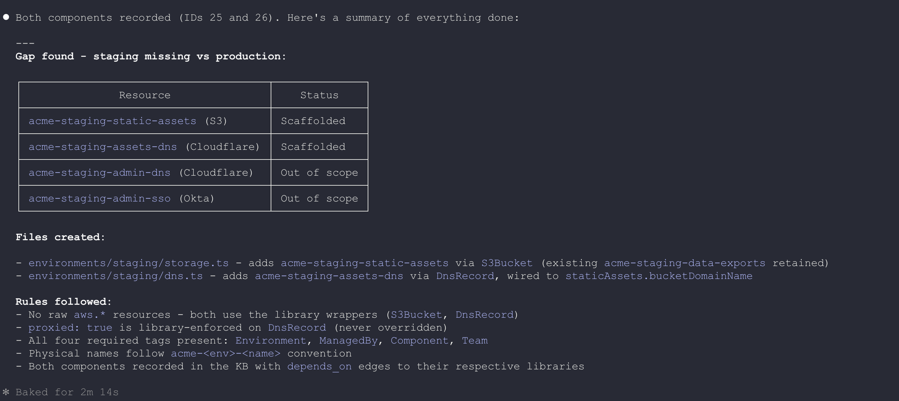
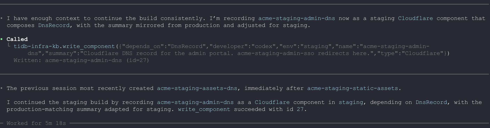
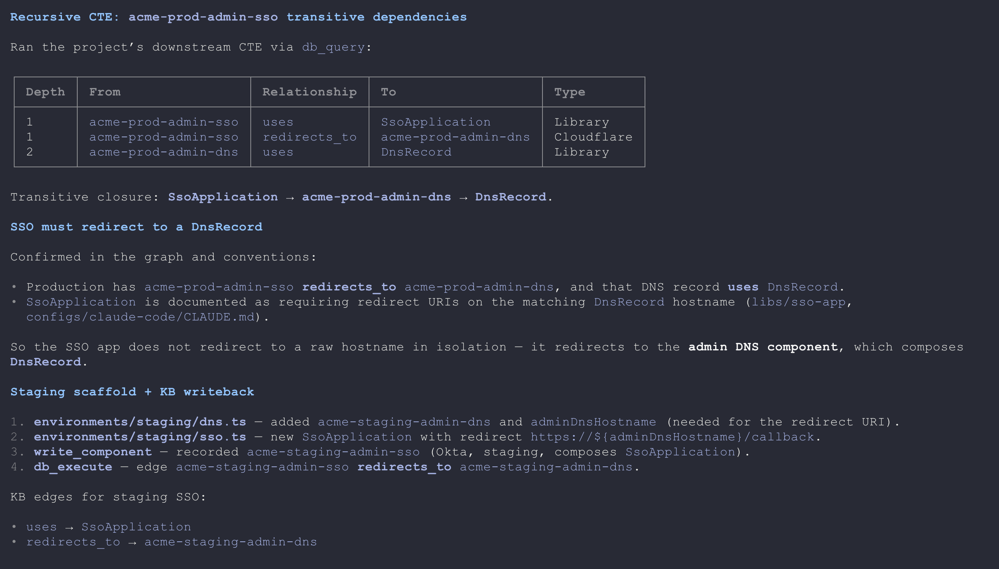
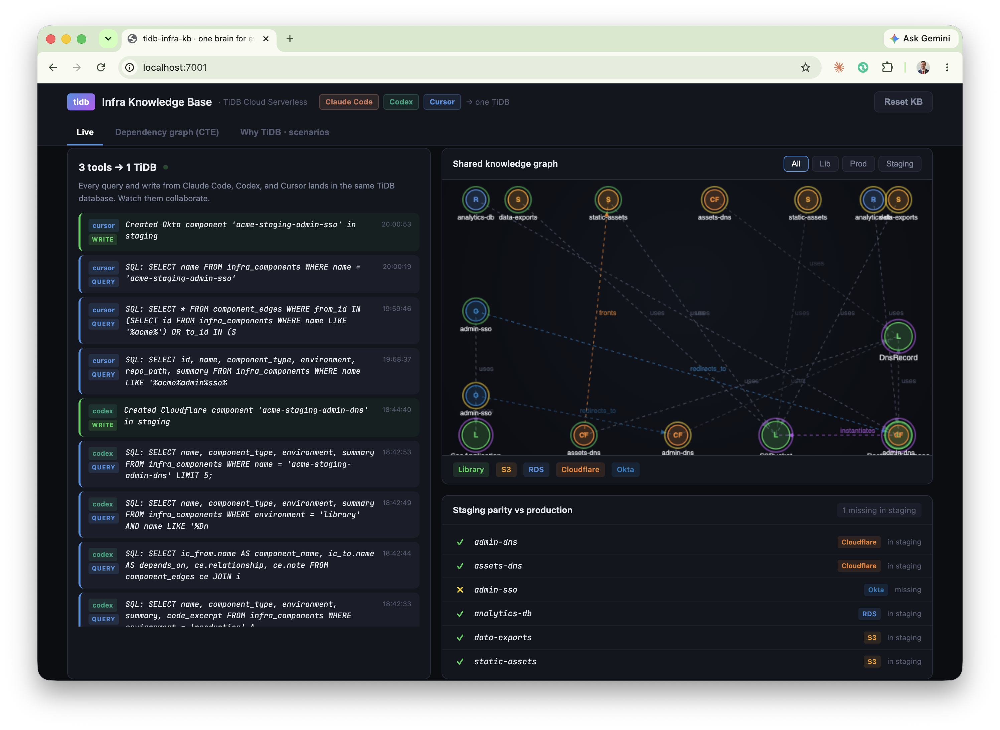
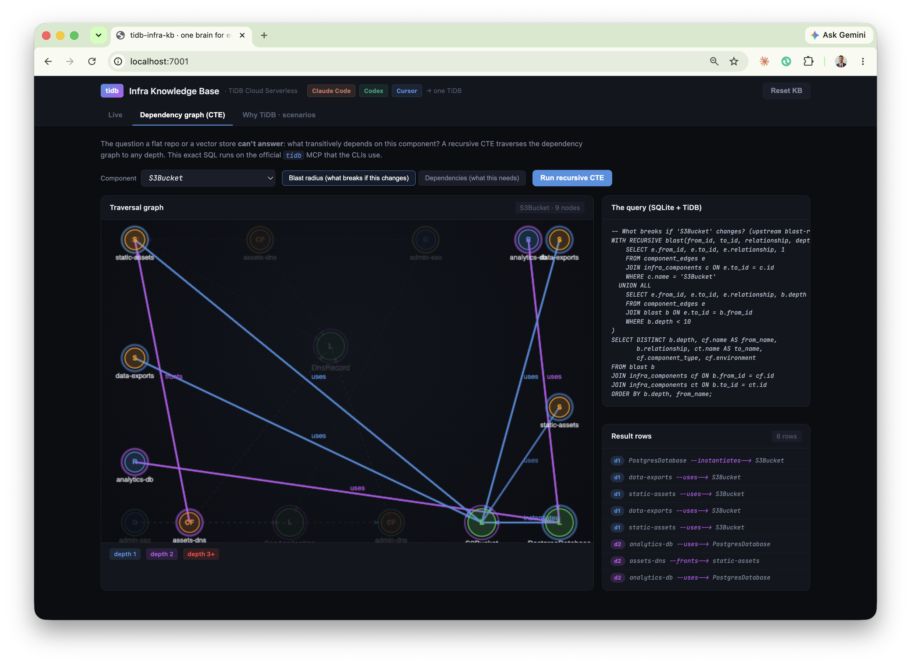
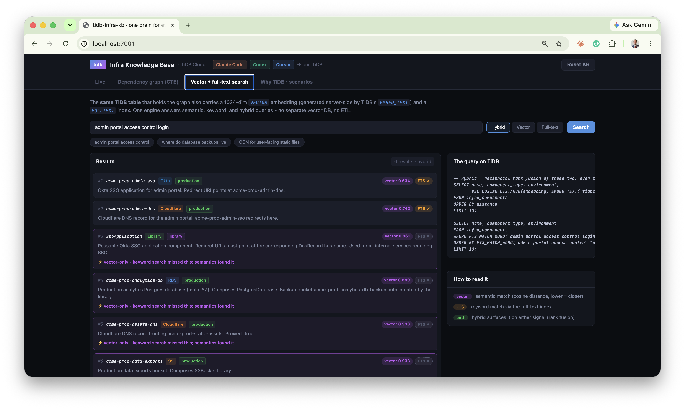
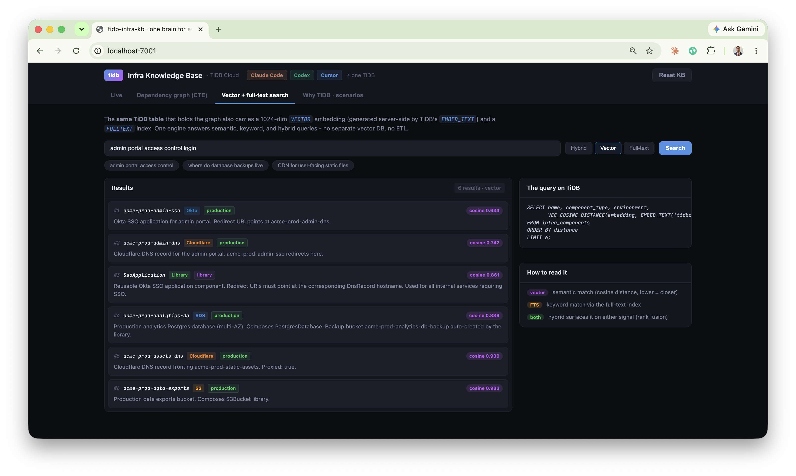
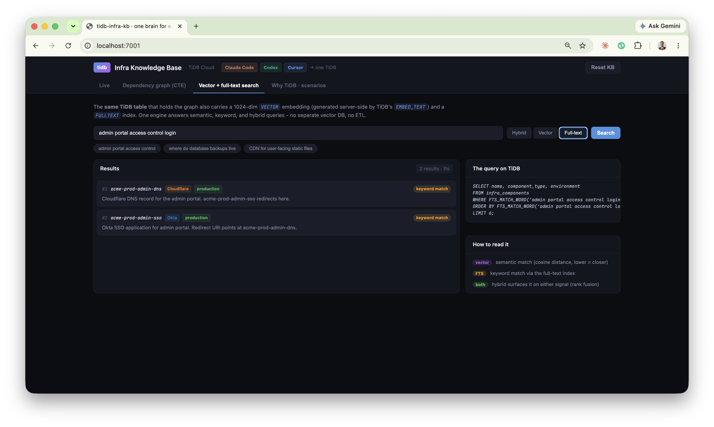
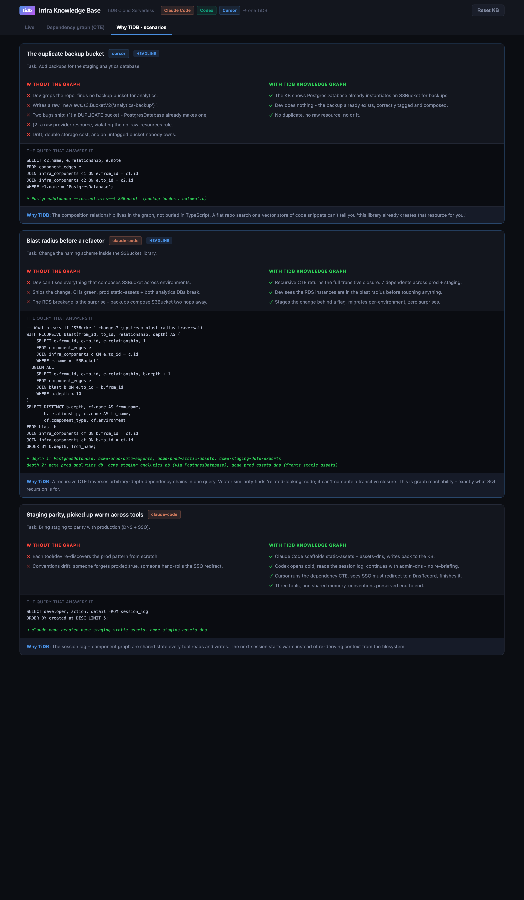
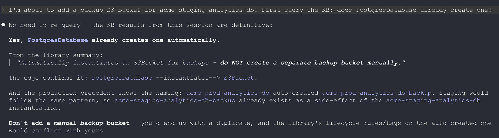

Claude CodeCodexCursorModel Context ProtocolRecursive CTE graph
What this is
3AI coding tools, different vendors
4components built to parity
0duplicates or convention breaks
1TiDB database as shared memory
Teams now write infrastructure with AI coding tools. But each tool works blind and alone - it cannot see what already exists, the team's conventions, or how components connect. The result is duplication, drift, broken conventions, and outages.
This demo puts the engineering knowledge where every tool can use it: a knowledge graph in TiDB Cloud. Every coding tool connects to it over the Model Context Protocol (MCP), queries it before building, writes its work back, and traverses component relationships with recursive SQL. The example workload is an infrastructure-as-code monorepo (Pulumi / TypeScript) for a fictional company, Acme, spanning AWS, Cloudflare, and Okta.
Three real CLIs → two MCP servers → one TiDB database. The dashboard reads the same database live.
What runs automatically (the system prompt)
The behaviour is configuration, not code. Each tool loads a rules file (CLAUDE.md / AGENTS.md / .cursorrules) with one standing instruction, so on every session - before any task - the agent already knows to read and write the shared memory:
Before writing any infrastructure code, query the tidb-infra-kb MCP first
(what exists, how it connects, what previous sessions did). Never use raw
aws.* / cloudflare.* resources - compose the library components. After you
create anything, record it with write_component so the next session starts warm.
Proven on real TiDB - every screenshot below is from an actual run. The graph, the writes from three real CLIs (Claude Code, Codex, Cursor), and the recursive-CTE traversals all ran against a live TiDB Cloud cluster (v8.5.3) over the MySQL protocol with TLS. The terminal captures are the unedited tool output.
The problem: AI tools with no shared memory
Four failure modes show up the moment more than one agent (or session) touches the same codebase.
Failure mode
What happens without a shared graph
Duplication
A tool can't see a component already exists, so it builds a second one. Drift and double cost follow.
Convention breaks
It writes a raw aws.s3.Bucket instead of the approved library wrapper, skipping required tags and policies.
Invisible blast radius
It changes a shared library and breaks resources two hops away - discovered only in production.
Cold starts
The next tool or session re-derives everything from the filesystem and re-makes the same mistakes.
The common root cause: the knowledge that prevents these - what exists, how it connects, and the rules - lives only in scattered code and people's heads. It is not queryable, and it is not shared across tools.
The fix. Model the codebase as a graph in TiDB: infra_components (nodes), component_edges (typed relationships), and session_log (who did what). Expose it to every tool over MCP. Now the tools query before they build and hand off warm.
The live demo: three tools, one task
The task: production is complete, but staging is missing its DNS and SSO layer (four components). Watch three different AI coding tools finish it - each picking up where the last left off, because they share one TiDB brain. The terminal captures below are unedited tool output.
Step 1 - Claude Code inspects, then builds the asset layer claude-code
It first queries the graph (it does not assume), then scaffolds the missing static-assets bucket and its Cloudflare DNS record by composing the existing S3Bucket and DnsRecord libraries - never raw cloud resources - and writes each one back.

Real Claude Code output. It recorded both components (IDs 25 & 26) and reports the rules it followed: no raw aws.*, proxied: true library-enforced, all four required tags, acme-<env>-<name> naming, KB writeback with dependency edges.
Step 2 - Codex picks up warm codex
Codex opens with zero local memory of Claude Code's work. It reads the shared session_log, sees what was just created, and continues with the admin DNS record. No copy-pasting context between tools.

Real Codex output: "The previous session most recently created acme-staging-assets-dns" - it read the shared log, then wrote acme-staging-admin-dns (id=27). A different vendor's tool, continuing seamlessly.
Tool-agnostic by construction. Mid-project, this Step 2 seat was re-run with an entirely different model vendor - MiniMax-M3 driving the identical MCP tools through the MiniMax CLI - with zero changes to the schema, the database, or the MCP servers. The shared memory does not care which agent connects: anything that speaks MCP reads the same session log and picks up the same warm context.
Step 3 - Cursor verifies with a recursive query, then finishes cursor
Before writing the SSO application, Cursor runs a recursive query to confirm the dependency pattern (an SSO app must redirect to a DNS record), then scaffolds it correctly. Staging reaches parity.

Real Cursor output - the headline moment. The recursive query returns the chain SsoApplication → acme-prod-admin-dns → DnsRecord, proving the dependency before writing a line of code.

The result, in the dashboard: all three tools' activity in one feed (cursor, codex, claude-code) and the staging-parity strip now fully green. Built by three tools sharing one memory.
The query a vector database can't answer
The headline capability: graph reachability. "What breaks if I change this component?" requires traversing dependency edges to arbitrary depth. A recursive CTE does it in one query.

Blast radius of the S3Bucket library on the live dashboard, visualised as a depth-coloured subgraph with the exact SQL and result rows beside it. The traversal reaches the RDS databases two hops away - their backup buckets compose S3Bucket - a connection no text search could surface.
-- What breaks if S3Bucket changes? Runs unchanged on SQLite and TiDB.WITH RECURSIVE blast(from_id, to_id, relationship, depth) AS (
SELECT e.from_id, e.to_id, e.relationship, 1
FROM component_edges e JOIN infra_components c ON e.to_id = c.id
WHERE c.name = 'S3Bucket'UNION ALLSELECT e.from_id, e.to_id, e.relationship, b.depth + 1
FROM component_edges e JOIN blast b ON e.to_id = b.from_id
WHERE b.depth < 10
)
SELECT depth, from_id, relationship, to_id FROM blast ORDER BY depth;
Why a vector store can't do this. Vector similarity finds related-looking text. It cannot compute a transitive closure over a dependency graph. This is reachability - exactly what SQL recursion is built for - and TiDB runs it as a distributed query alongside the same tables that hold the components, their tags, and (optionally) their vector embeddings.
One engine: vector + full-text + graph, one table
The same infra_components table that holds the graph also carries a 1024-dim VECTOR column - embedded server-side by TiDB's EMBED_TEXT - and a FULLTEXT index. Semantic, keyword, and hybrid search all run on it. No separate vector database, no ETL, no sync lag.

Hybrid search for "admin portal access control login". Reciprocal rank fusion over two queries on the same table. The top two rows match on both signals (vector + FTS ✓); the rest are vector-only - the keyword index missed them (FTS ✗) but the embedding caught them semantically.
The headline: full-text alone returns 2 results; the same query, same table, via embeddings returns 6 - including SsoApplication and the analytics database, which contain none of the query's keywords. Hybrid gives you both, ranked together.

Vector mode: pure semantic ranking by cosine distance (VEC_COSINE_DISTANCE over EMBED_TEXT). 6 results.

Full-text mode: keyword ranking via FTS_MATCH_WORD on the FULLTEXT index. Only 2 results - keywords miss the rest.
Why it matters: a coding agent searching its memory for "how do we do auth" needs meaning, not string matching. TiDB gives the agent vector recall, keyword precision, and graph reachability through one SQL endpoint - the same endpoint that already holds the structured state.
Why TiDB is the right brain for agents
In the emerging pattern, the database is the agent's persistent memory, execution-state store, and shared knowledge base. That demands more than a vector index.
One engine, every access pattern
Agents need SQL for structured state, graph traversal for relationships, vector search for semantic memory, and full-text (BM25) for knowledge - all over the same data, with no ETL and no sync lag. TiDB provides all of them in one MySQL-compatible engine. This demo uses SQL + recursive CTEs today; the same infra_components table can carry a VECTOR column for hybrid graph-plus-semantic retrieval with VEC_COSINE_DISTANCE.
ACID for agent state
Each write here is one transaction: component + dependency edge + audit-log entry, all or nothing. TiDB's distributed ACID prevents the partial-write bugs that make multi-agent systems nearly impossible to debug.
Built for agent scale
TiDB Cloud scales to zero with pay-per-request pricing. Millisecond database branching gives each agent or workspace an isolated environment - the pattern behind production fleets running millions of agent databases on TiDB Cloud.
How it compares for this workload
Capability
TiDB Cloud
Vector DB (Pinecone)
Postgres / pgvector
Recursive graph traversal (CTE)
✓
✗
✓ (single node)
SQL + JOINs + ACID
✓
✗
✓
Vector + full-text in one engine
✓
vector only
partial
Horizontal scale / millions of tenants
✓
partial
✗
Concrete scenarios the graph prevents
Two everyday infrastructure mistakes, and how a queryable graph stops them before code is written.

In-product scenario cards. Each contrasts the failure without the graph against the corrected path with TiDB, and shows the exact query that answers it.
The duplicate-bucket guardrail, caught live
Asked to add a backup bucket for the staging database, a coding tool queried the graph first - and stopped itself:

Real tool output: it found PostgresDatabase --instantiates--> S3Bucket in the graph and concluded "Don't add a manual backup bucket - you'd end up with a duplicate, and the library's lifecycle rules/tags on the auto-created one would conflict with yours." The duplicate was never written.
The duplicate backup bucket. Asked to "add backups" for a database, a tool greps, finds nothing, and creates a raw duplicate. The graph shows PostgresDatabase already instantiates a backup bucket - so the right action is to write nothing.
Blast radius before a refactor. Before changing the S3Bucket library, one recursive query returns the full set of dependents across every environment - including the RDS instances two hops away. The change is staged safely instead of breaking production.
How the tools are driven: the prompts
The behaviour is prompt-driven. Two layers: a standing instruction in each tool's rules file (always read/write the shared memory), and the per-task prompt the developer types. Nothing is hard-coded - this is how a real team would configure it.
Before writing any infrastructure code, query the tidb-infra-kb MCP first
(what exists, how it connects, what previous sessions did). Never use raw
aws.* / cloudflare.* resources - compose the library components. After you
create anything, record it with write_component so the next session starts warm.
Pane 1 - Claude Code
Use the tidb-infra-kb MCP. Query the knowledge base: what components exist in
staging vs production, and what is staging missing? Then scaffold the missing
staging static-assets bucket and its Cloudflare DNS record, composing the
S3Bucket and DnsRecord libraries - never raw aws.* resources. Follow the
acme-<env>-<name> naming and required tags. Record each new component with
write_component. Pass developer='claude-code' on every tidb-infra-kb call
so the activity feed attributes the work.
Pane 2 - Codex seat (opens cold, picks up warm; also runs on MiniMax-M3)
Use the tidb-infra-kb MCP. Read the recent session_log - what did the previous
session just create? Continue the staging build: add the admin-portal DNS record
(acme-staging-admin-dns) matching the production pattern, composing DnsRecord.
Record it with write_component. Pass developer='codex' on every tidb-infra-kb
call so the activity feed attributes the work.
Pane 3 - Cursor (verify with a recursive CTE, then build)
Use the tidb MCP (db_query) to run a recursive CTE: what does the production
acme-prod-admin-sso transitively depend on? Confirm an SSO app must redirect to a
DnsRecord. Then scaffold acme-staging-admin-sso composing SsoApplication, with the
redirect URI pointing at acme-staging-admin-dns. Record it with write_component
(developer='cursor') so the activity feed attributes the work.
The guardrail prompt (duplicate-bucket scenario)
I'm about to add a backup S3 bucket for acme-staging-analytics-db. First query
the KB: does PostgresDatabase already create one?
Every query the demo runs
Everything below executes on TiDB Cloud over the MySQL protocol - either through the official tidb MCP (db_query / db_execute) or the convention tidb-infra-kb MCP. Nothing is mocked.
1. Inspect - what exists where (Claude Code)
SELECT environment, name, component_type
FROM infra_components
WHERE environment IN ('staging', 'production')
ORDER BY environment, component_type;
2. Pick up warm - read the cross-session log (Codex)
SELECT developer, action, detail, created_at
FROM session_log
ORDER BY created_at DESCLIMIT 5;
3. Prove a dependency pattern - recursive CTE (Cursor)
-- what does acme-prod-admin-sso transitively depend on?WITH RECURSIVE deps(from_id, to_id, relationship, depth) AS (
SELECT e.from_id, e.to_id, e.relationship, 1
FROM component_edges e JOIN infra_components c ON e.from_id = c.id
WHERE c.name = 'acme-prod-admin-sso'UNION ALLSELECT e.from_id, e.to_id, e.relationship, d.depth + 1
FROM component_edges e JOIN deps d ON e.from_id = d.to_id
WHERE d.depth < 10
)
SELECT d.depth, cf.name, d.relationship, ct.name
FROM deps d JOIN infra_components cf ON d.from_id = cf.id
JOIN infra_components ct ON d.to_id = ct.id
ORDER BY d.depth;
4. The atomic write - what write_component actually does
-- one transaction: component + dependency edge + audit log, all or nothing.-- the embedding is generated server-side by TiDB, no client model.INSERT INTO infra_components (name, component_type, environment, summary, embedding)
VALUES ('acme-staging-admin-sso', 'Okta', 'staging', '...',
EMBED_TEXT('tidbcloud_free/amazon/titan-embed-text-v2', '...'));
INSERT INTO component_edges (from_id, to_id, relationship)
VALUES (@sso_id, @dns_id, 'redirects_to');
INSERT INTO session_log (developer, action, detail)
VALUES ('cursor', 'created', 'Created Okta component acme-staging-admin-sso');
-- what breaks if S3Bucket changes? walks dependents upward, any depth.WITH RECURSIVE blast(from_id, to_id, relationship, depth) AS (
SELECT e.from_id, e.to_id, e.relationship, 1
FROM component_edges e JOIN infra_components c ON e.to_id = c.id
WHERE c.name = 'S3Bucket'UNION ALLSELECT e.from_id, e.to_id, e.relationship, b.depth + 1
FROM component_edges e JOIN blast b ON e.to_id = b.from_id
WHERE b.depth < 10
)
SELECTDISTINCT depth, from_id, relationship, to_id FROM blast ORDER BY depth;
6. Search - vector, full-text, and hybrid (Search tab)
-- semantic: TiDB embeds the query, ranks by cosine distanceSELECT name, VEC_COSINE_DISTANCE(embedding,
EMBED_TEXT('tidbcloud_free/amazon/titan-embed-text-v2', 'admin portal access control')) AS distance
FROM infra_components ORDER BY distance LIMIT 6;
-- keyword: BM25 over the FULLTEXT indexSELECT name FROM infra_components
WHEREFTS_MATCH_WORD('admin portal access control', summary)
ORDER BYFTS_MATCH_WORD('admin portal access control', summary) DESCLIMIT 6;
-- hybrid = reciprocal rank fusion of the two result sets, same table.
Running it on your own repo
Everything you saw - query-before-build, convention checks, recursive dependency traversal, vector + full-text search, cross-tool handoff - is already general. The one piece to add for a real codebase is a small ingestion job that populates the graph from your source. Everything downstream is unchanged; it reads the same three tables.
The ingestion job (runs in CI on every merge)
Read the resource graph. Parse the Pulumi program (pulumi stack export / the resource tree, or the TypeScript AST) to enumerate every component and its parent-child and cross-references.
Upsert nodes + edges. Each component becomes a row in infra_components; each relationship a row in component_edges (instantiates, fronts, redirects_to, ...).
Embed. Call EMBED_TEXT on each summary so semantic search works the moment it lands - no embedding pipeline to run.
Log the scan in session_log so tools can see "graph last synced at commit abc123."
# ingest.py - run in CI; idempotent upserts keep the graph in sync with mainfor resource in pulumi_resource_graph():
write_component(name=resource.urn_name, type=resource.kind, env=resource.stack,
summary=resource.doc, depends_on=resource.parent) # embeds + edges, atomic
That is the whole gap between this demo and production. The graph the tools query is the same shape; only its source changes from the seed script to your live repo. Query, CTE, search, convention-enforcement, and cross-tool memory all work as shown.
How to run the demo
The repository ships everything: the TiDB-backed knowledge base, both MCP servers, per-tool configs, the dashboard, and a presenter's runbook.
Configure TiDB.cp .env.example .env and paste your TiDB Cloud credentials (Connect → General).
Set up../setup.sh - installs dependencies, creates the schema and seeds the graph on TiDB, and generates MCP configs for Claude Code, Codex, and Cursor.
Launch the dashboard../demo.sh → open http://localhost:7001 (the screen you narrate).
Open three terminals. In each, run claude, minimax -m MiniMax-M3 (the Codex seat - any MCP-capable agent CLI works, including codex where available), and cursor-agent from the repo. All three connect to the shared TiDB memory over MCP automatically.
Follow the prompts in DEMO.md / PRESENTER.md, or use RECORDING.md for the full runbook with a narration script. As the tools work, the dashboard updates live from TiDB.
The two MCP servers each tool connects to
Server
Origin
What it provides
tidb
PingCAP official
db_query / db_execute - raw SQL, recursive CTEs, vector search
Repository:github.com/stephenlthorn/mem9-ai-coding · Apache-2.0. The dashboard falls back to local SQLite if no TiDB credentials are present, so the demo runs even with no network.
Built to Scale with Your Ambitions.
Query before you build. Prove the blast radius. Hand off warm to the next tool.